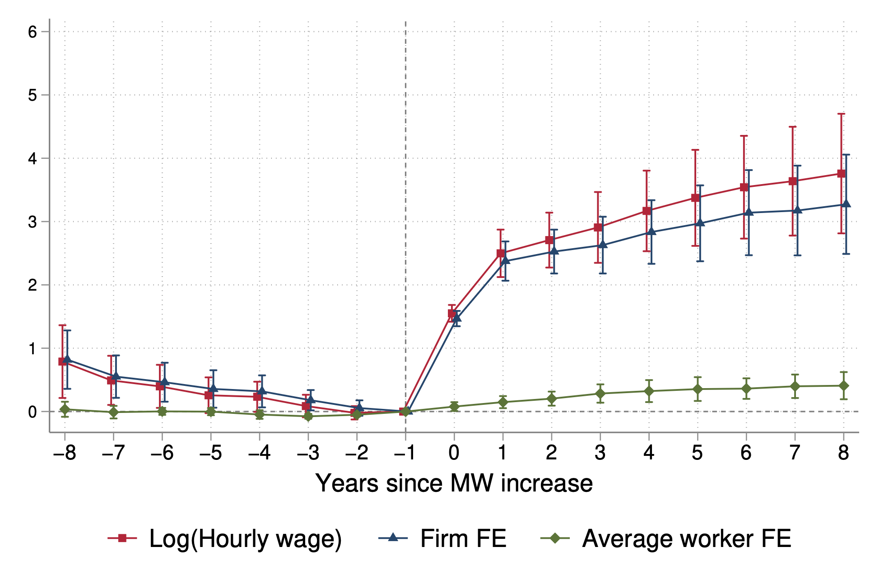
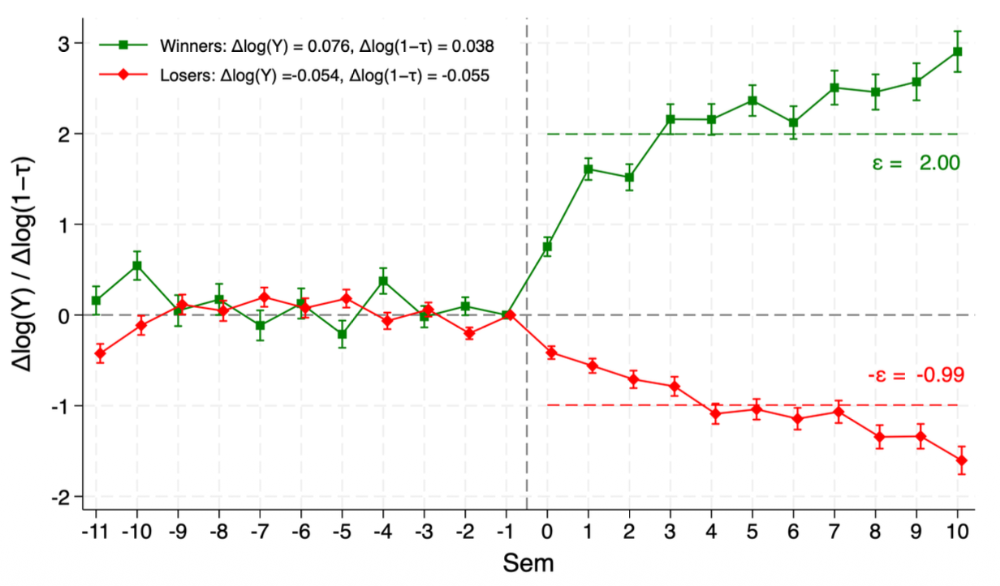
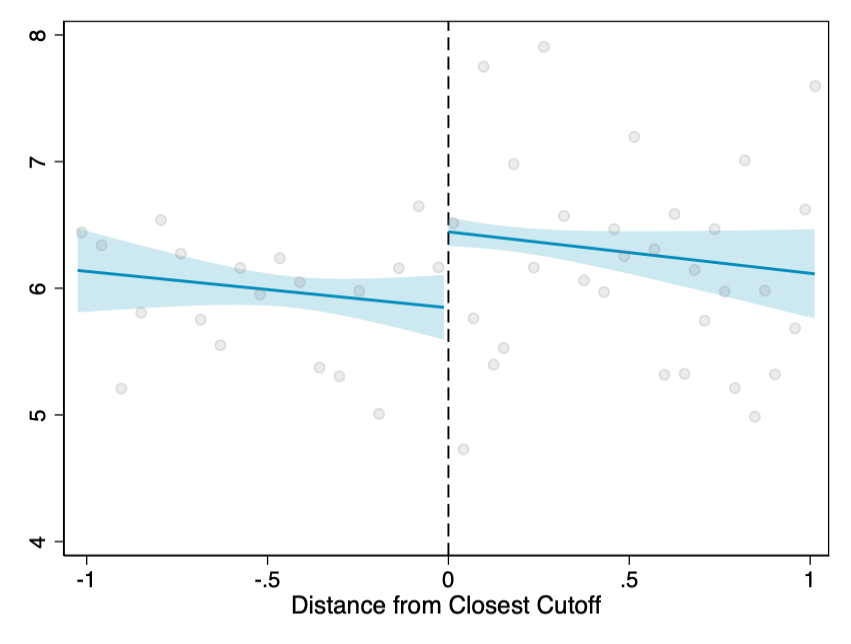

MATHÍAS FONDO
I am a PhD Student in Economics at the University of Bologna. My research lies at the intersection of applied microeconomics, public economics, and labor economics, exploring how public policies shape economic opportunities and inequality.
My current projects focus on intergenerational social mobility in higher education, the labor market effects of minimum wages, and behavioral responses to income taxation.
Before starting my PhD, I earned my MSc and BS in Economics from Universidad de la República (Uruguay).
Contact: mathias.fondo@unibo.it
RESEARCH
Working Papers
Minimum Wages and the Distribution of the Firm Wage Premia

Work in Progress
Asymmetric Responses to Labor Income Taxation

Grades and Peer Comparisons in College: Impacts on Future Academic Performance

Socioeconomic Status, College Performance and Labor Market Outcomes: Implications for Social Mobility
Pre-Doctoral Research
Transmisión intergeneracional de normas de género y participación de la mujer en el mercado de trabajo
Investigaciones basadas en la Encuesta de Generaciones y Género. Uruguay 2022. Programa de Población (Udelar) / Banco Interamericano de Desarrollo.
Evolución de las principales variables del mercado laboral uruguayo (2016-2022)
Documentos de Trabajo (working papers) 23-17, Instituto de Economía - IECON.
TEACHING
-
Econometrics
Undergraduate level, University of Bologna (Feb 2025 - present) -
Introduction to Machine Learning for Economists
Master level, University of Bologna (Oct 2024 - present) -
Data Mining and Machine Learning
Undergraduate level, Johns Hopkins University (Feb 2025 - Apr 2025) -
Industrial Organization
Undergraduate level, Universidad de la República (Mar 2022 - Aug 2022)